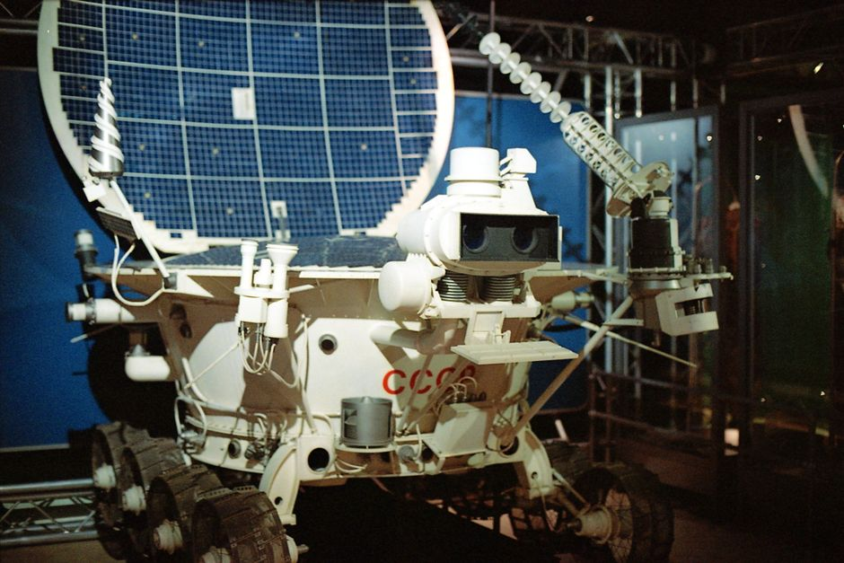

Look up at the night sky. What do you see? Stars, planets, the moon – a vast, mysterious universe waiting to be explored! For centuries, humans have dreamed of journeying beyond Earth. But space is a harsh, unforgiving environment, full of dangers like extreme temperatures, radiation, and vacuum. That's where our incredible space robots come in! These tireless, intelligent machines are our eyes, ears, and hands in the cosmos, venturing where humans can't easily go, pushing the boundaries of discovery, and paving the way for future human missions. Join us as we explore the fascinating world of space robotics and how these mechanical marvels are unlocking the secrets of the universe, one mission at a time.
Why Robots in Space? The Ultimate Explorers
Sending humans into space is incredibly complex, expensive, and risky. Astronauts need air, water, food, warmth, and protection from radiation – all heavy and difficult to provide far from Earth. This is where robots shine!
Space robots are designed to withstand the brutal conditions of space. They don't need to breathe, eat, or sleep. They can operate in extreme heat or cold, in a vacuum, and endure high levels of radiation that would be fatal to humans. Their ability to perform dangerous tasks, collect data, and explore distant worlds makes them indispensable for space exploration. They are our scouts, our scientists, and our engineers, working tirelessly millions of kilometers away.
- Endurance: Robots can operate for years, even decades, in harsh environments.
- Safety: They perform tasks too dangerous for humans, like exploring active volcanoes or dealing with radiation.
- Precision: Robots can perform delicate operations with incredible accuracy.
- Cost-Effectiveness: While expensive to build, they eliminate many of the life-support costs associated with human missions.
- Reach: They can travel to and explore places far beyond where humans can currently go.
Pioneers of Space Robotics: The Mars Rovers
When we talk about space robots, the first thing many of us think of are the incredible Mars rovers. These six-wheeled laboratories have captured the imagination of millions, tirelessly exploring the Martian surface for signs of past water and potential life.
Spirit and Opportunity: The Twin Explorers
Launched in 2003, NASA's Spirit and Opportunity rovers were designed for a 90-day mission. They far exceeded expectations! Opportunity operated for an astounding 14 years, traveling over 45 kilometers and sending back invaluable data about Mars' geology and climate history. Spirit, too, worked for over six years, confirming that Mars once had liquid water.
Curiosity and Perseverance: Modern Martian Scientists
Building on the success of their predecessors, NASA launched the Curiosity rover in 2011 and Perseverance in 2020. Curiosity, a car-sized robot, has been exploring Gale Crater for over a decade, analyzing rocks and soil to understand Mars' habitability. It discovered evidence of ancient lake beds and organic molecules, key ingredients for life.
Perseverance, the most advanced rover yet, landed in Jezero Crater, an ancient river delta. Its primary mission is to search for signs of ancient microbial life and collect samples of Martian rock and regolith (soil) to be returned to Earth by future missions. Perseverance also carried Ingenuity, the first helicopter to fly on another planet, proving aerial exploration is possible on Mars!
India has also made its mark on Mars exploration with the Mars Orbiter Mission (MOM), affectionately known as Mangalyaan. While not a rover, this ISRO spacecraft successfully entered Martian orbit in 2014, making India the fourth space agency to reach Mars and the first Asian nation to do so. It provided crucial data about the Martian atmosphere and surface features, showcasing India's growing capabilities in space robotics and exploration.
Imagine controlling a rover millions of kilometers away! It's like writing a program here on Earth that executes on Mars. Here's a very simple conceptual Python code snippet that illustrates how you might command a rover to move:
# A conceptual Python function to simulate a rover's movement command
def command_rover_movement(direction, distance_meters):
"""
Simulates sending a movement command to a space rover.
In a real scenario, this would translate to complex motor controls and sensor feedback.
"""
print(f"--- Sending command to Rover ---")
print(f"Instruction: Move {direction} by {distance_meters} meters.")
if direction == "forward":
print("Executing 'move forward' sequence...")
# Real rover would engage motors, check terrain, etc.
elif direction == "turn_left":
print("Executing 'turn left' sequence...")
elif direction == "collect_sample":
print("Deploying robotic arm to collect sample...")
else:
print("Unknown command. Please check instructions.")
print(f"Command '{direction}' processed. Awaiting telemetry...")
# Example of how a scientist might use this:
# command_rover_movement("forward", 10)
# command_rover_movement("turn_left", 90) # 90 degrees
# command_rover_movement("collect_sample", 0) # Distance not relevant for sample collection
Beyond Mars: Exploring the Solar System
Mars isn't the only destination for space robots. Our solar system is teeming with fascinating worlds, and robots are our pioneers in exploring them.
- Jupiter and Saturn: Missions like NASA's Juno (at Jupiter) and Cassini (at Saturn, now concluded) used robotic probes to study these gas giants and their magnificent moons, revealing incredible phenomena like Saturn's rings and Jupiter's Great Red Spot.
- Asteroids and Comets: Robots like OSIRIS-REx (which collected a sample from asteroid Bennu) and Hayabusa2 (from asteroid Ryugu) have visited these ancient space rocks, bringing back precious samples that can tell us about the early solar system.
- Future Missions: Concepts like the Europa Clipper are designed to explore Jupiter's icy moon Europa, which might harbor a vast ocean beneath its surface – a potential home for extraterrestrial life!
Robots in Orbit: Satellite Servicing and Space Maintenance
It's not just distant planets that benefit from robotics. Earth's orbit is getting crowded with satellites, and robots are becoming crucial for managing this orbital traffic and extending the life of valuable assets.
Imagine a satellite running low on fuel or needing a repair. Instead of launching a brand new one, what if a robot could fly up and fix it? This is the goal of satellite servicing. Projects like OSAM-1 (On-orbit Servicing, Assembly, and Manufacturing-1) by NASA are developing robotic arms and tools to refuel, repair, and even upgrade satellites directly in space. This could save billions of dollars and reduce space debris.
Robots are also vital for space debris removal. With thousands of defunct satellites and rocket parts orbiting Earth, the risk of collisions is growing. Future robots could be tasked with capturing and de-orbiting these pieces of junk, making space safer for everyone.
"Robots are not going to take over the world. They're going to make the world more efficient, productive, and safer for humans."
The Future is Robotic: Human-Robot Collaboration and Beyond
The future of space exploration isn't just about robots *or* humans – it's about both working together. Imagine astronauts on the Moon or Mars, assisted by intelligent robots that can carry heavy loads, scout dangerous terrain, or perform repetitive tasks while humans focus on scientific discovery.
The upcoming Lunar Gateway, an orbital outpost around the Moon, will feature advanced robotics for assembly, maintenance, and docking. Robots will be instrumental in building lunar bases, mining resources from asteroids, and even constructing large telescopes in space.
With advancements in Artificial Intelligence (AI) and machine learning, future space robots will be even more autonomous, making complex decisions and adapting to unforeseen challenges without constant human input. They will be our partners in exploring the deepest corners of our universe.
Getting Involved: Your Path to Space Robotics
Does the idea of designing, building, or programming the next generation of space robots excite you? The field of space robotics is growing rapidly, and it needs bright, curious minds like yours!
Here’s how you can start your journey:
- Study STEM: Focus on Science, Technology, Engineering, and Mathematics in school. Physics, computer science, and engineering are particularly relevant.
- Learn to Code: Languages like Python, C++, and Java are essential for robotics. Start with simple projects!
- Build Robots: Get hands-on experience with robotics kits (like Arduino, Raspberry Pi), participate in robotics competitions, or join a robotics club.
- Explore MakerWorks: Our workshops and resources are designed to give you the practical skills and knowledge you need to dive into robotics. We offer courses that can introduce you to programming, electronics, and mechanical design – all foundational for space robotics.
- Stay Curious: Read books, watch documentaries, and follow space agencies like ISRO and NASA to stay updated on the latest missions and discoveries.
Conclusion
From the dusty plains of Mars to the vast expanse of the outer solar system, space robots are transforming our understanding of the universe. They are the unsung heroes, silently and bravely pushing the boundaries of human knowledge. As technology advances, these incredible machines will continue to lead the charge, making the impossible possible and inspiring generations to look up and dream big. The next great space explorer might just be you, designing the robots that will uncover the universe's next big secret!
Are you ready to build the future? Explore the world of robotics with MakerWorks and start your journey today!